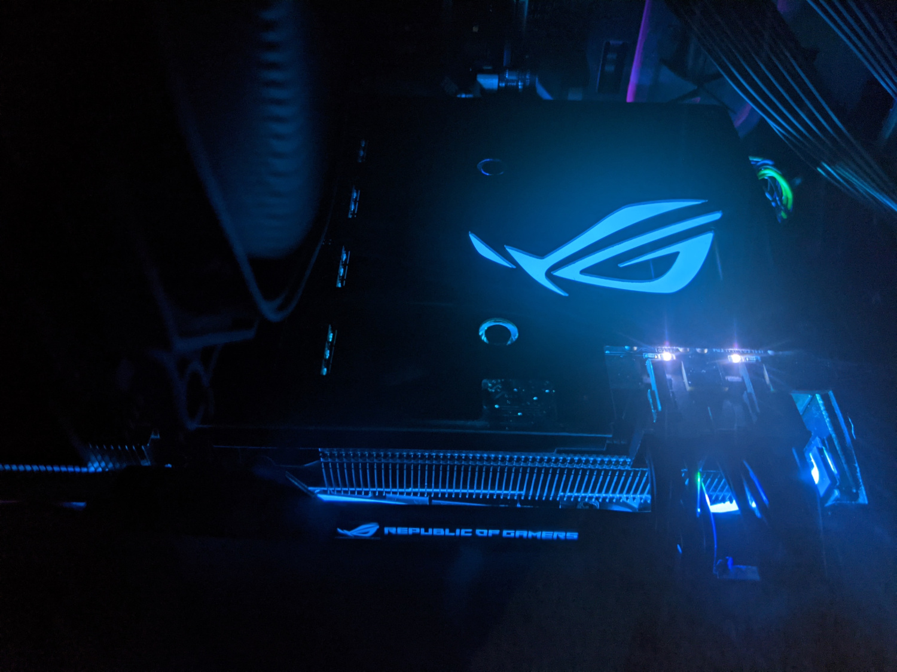
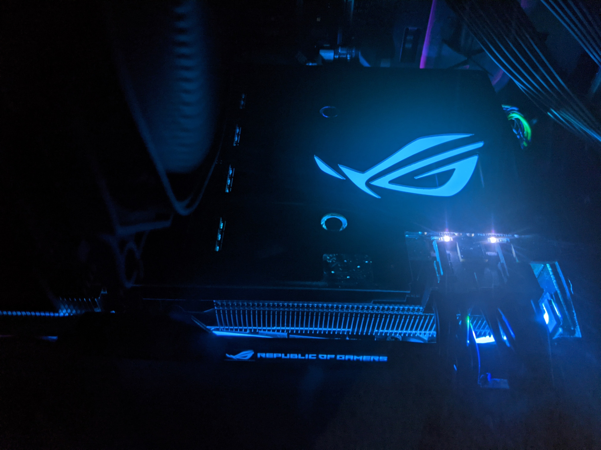

How I Spent My Pandemic Staycation
I love traveling and have done almost none of it this year. Here's a time capsule of other hobbies I took up in 2020-21.
Working from Home
(Let's pretend this counts as a hobby.) My canine coworker decides when it's break time.
Eating
Cooking
I never enjoyed this until suddenly I had no office or commute. Makes for a nice transition from work life to home life. Also, there's food when you're finished.

Hiking
Socially distanced, outdoor day trips to Bernheim, the Falls of the Ohio, and the Kentucky River.


Windowsill Gardening
These were fun while the sun lasted.


Organizing Photos
This was my last real vacation: a long weekend in New Orleans back in January 2020. Beign-YAYS!


PC Building
Completed my second build six years after the first one. GPU prices did NOT cooperate.
 

Learning JavaScript
Harder than it looks.
Here's a to do list I made after hours spent on Google/YouTube, looking for something even simpler than "beginner."
To Do List
Instructions:
- Type a task in the box.
- Click the + button to add the task to the list.
- Click any task to mark it complete.
- Double click any task to delete it.